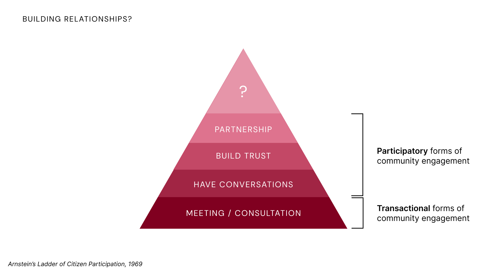
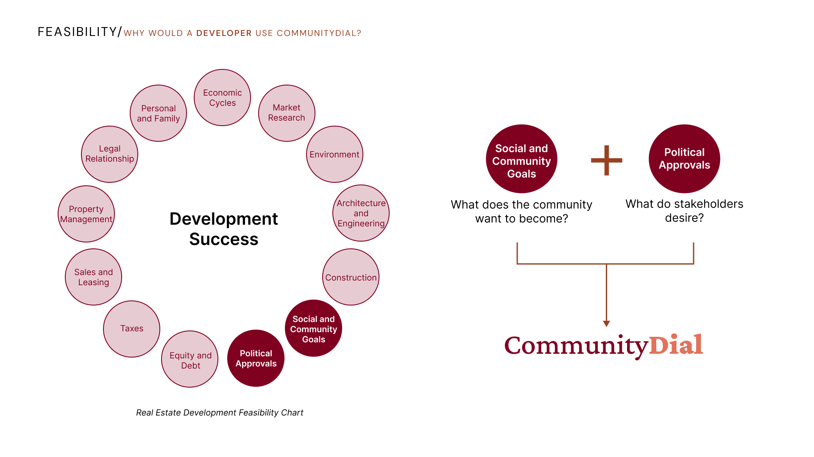
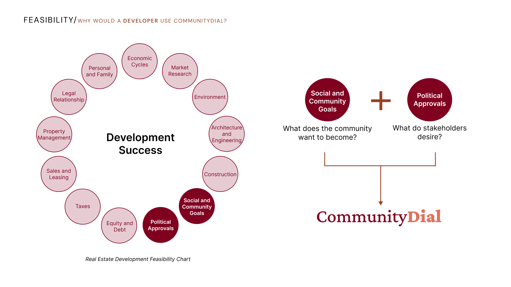
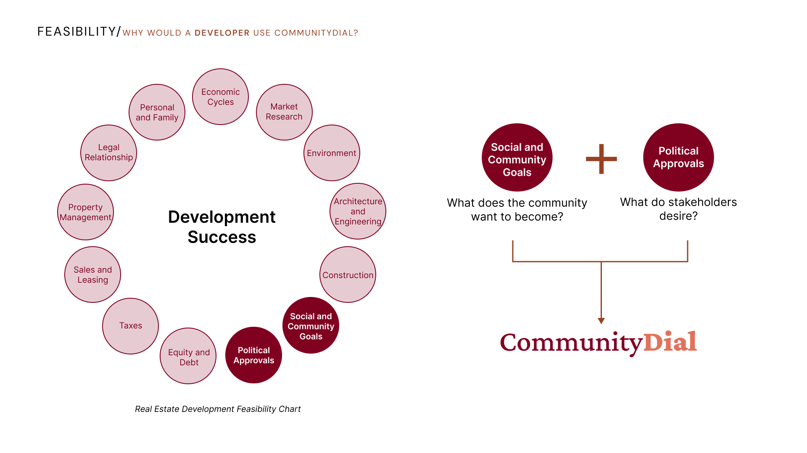

Community Dial: a new community engagement framework
UT 430, Strategic Design, Fall 2024
Figma, Illustrator, Streamlit, Python, OpenAI
Place-based Research, User Research, IOOI framework, Prototyping, Narrative Building
Team: TF Chen, Sibora Berisha, Urja Kaushik
A platform designed to bridge the gap between the voices of the community
and actionable development. By transforming abstract desires into tangible
data, CommunityDIAL makes it easier for decision-makers to align their actions
with the community's needs.
The tool gathers inputs through various channels, groups them based on keywords and pre-determined categories, and visualizes collective desires that reflect the artistic identity of the local community to help them have leverage in urban development.
Working demo here.

 

